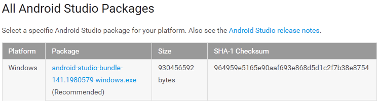
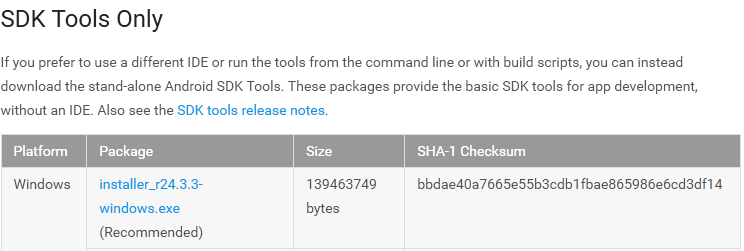
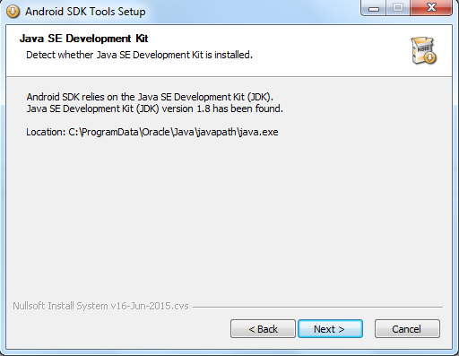
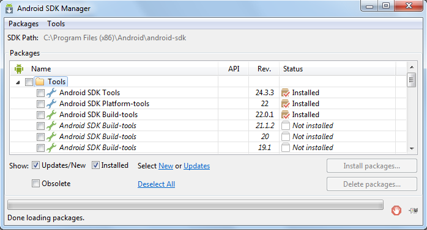
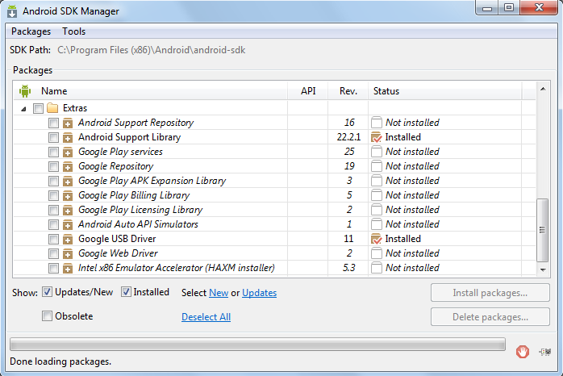
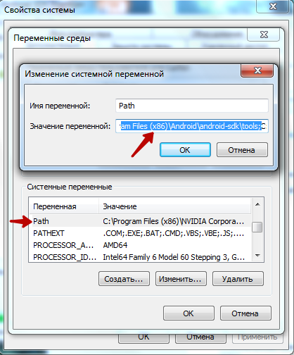

Можно установить среду разработки Android Studio со встроенным SDK или скачать SDK отдельно.
https://developer.android.com/sdk/index.html


Для работы Android SDK понадобится Java SE Development Kit (JDK) версией 1.8
http://www.oracle.com/technetwork/java/javase/downloads/jdk8-downloads-2133151.html


После того как SDK будет установлено нужно запустить Android SDK Manager по адресу: C:\Program Files (x86)\Android\android-sdk
Далее необходимо установить Android SDK Tools, Android SDK Platform-tools и Android SDK Build-tools и установить Android Support Library и
Google USB Driver (пакет драйверов устройств)


Чтобы использование ADB было комфортным необходимо прописать адреса в системной переменной Path.

Теперь ADB доступно в командной строке без указания к нему пути.

Created with the Personal Edition of HelpNDoc: Free Web Help generator